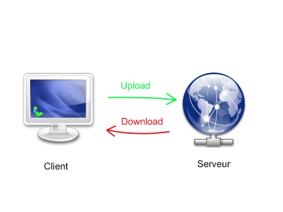
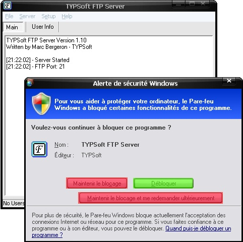
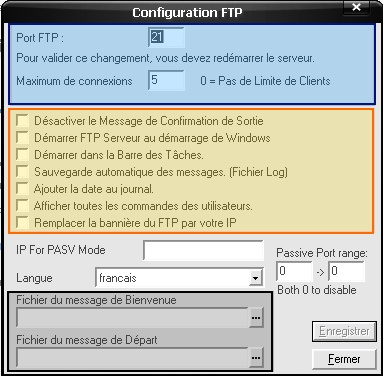
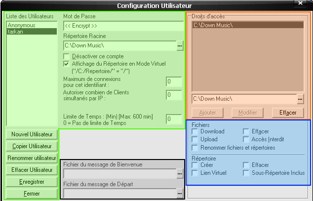

Bienvenue dans mon tuto. Je serai votre guide tout au long de cette nouvelle aventure : je peux vous garantir qu'après avoir lu et compris ce tuto, vous serez en mesure de créer votre propre serveur FTP sous Windows ;) Préparez-vous à la torture, on commence !
Oui, je sais, encore un mot très bizarre ! je vous explique. FTP est l'abréviation de FFile Transfer Protocol (Protocole de Transfert de Données) ; ce protocole est fait pour le transfert de données entre un client et un serveur.
C'est qui ces deux-là, client et serveur ?
Une Illustration vaudra mieux pour vous mettre sur la bonne fréquence ;) :

Dans cette image (ou ce schéma), supposons que vous êtes le client ; vous, par rapport au serveur, quand vous envoyez des données, on dit que vous êtes en train d'uploader ; quand vous recevez des données, on dit que vous êtes en train de downloader. Par rapport à un serveur, c'est la même chose quand il vous envoie des données, il uploade quand il reçoit des données, il downloade (si vous n'avez pas compris, relisez ce paragraphe, c'est fondamental). Si vous voulez en savoir plus au sujet des serveurs et des clients, j'ai créé une sous-partie appelée Vocabulaire. ;)
Il est impossible de transférer des données depuis un serveur vers un autre serveur ?
C'est possible, mais je ne vais pas en parler dans ce tuto.
le serveur demande le login et le mot de passe du client ;
après avoir entré vos coordonnées, le serveur les vérifie ;
si votre login et votre mot de passe sont valides, il accepte la connexion ;
vous pouvez transférer des fichiers.
Je n'ai pas voulu trop détailler, ce n'est pas la peine, ça ne ferait que vous embrouiller ;) .
Comme vous le savez, notre serveur est sur Internet mais s'il n'est pas sur le port par défaut, vous ne pourrez pas y accéder.
Quoi ? Mais j'ai écrit la bonne adresse, pourquoi je ne peux pas accéder au serveur ?
Eh oui, c'est la dure loi de l'informatique :p (non, je rigole), vous ne pouvez pas accéder au serveur parce que vous n'avez pas écrit quel port utiliser ; un serveur est par défaut sur le port 21, mais s'il est par exemple sur le port 55, qu'allez-vous faire ? Votre navigateur ne va pas savoir où il est, lui.
Et c'est quoi, un port ?
Supposons que vous allez chez un ami, qui vous a donné l'adresse de sa maison "Rue de la liberté" mais vous n'en connaissez pas le numéro : quelle maison choisir ? C'est impossible de savoir o_O (ici, nous supposons que la rue est l'adresse, et le numéro de la maison est le port). Choisissons l'inverse : vous allez chez votre ami, il vous donne le numéro de sa maison, "244", mais pas la rue ; vous pourrez trouver des maisons qui ont le numéro "244", mais quelle est la bonne (ici, nous supposons que la rue est le port et le numéro de la maison est l'adresse) ?
Eh bien avec Internet, c'est le même principe :D : des milliers d'adresses peuvent être sur différents ports mais une seule correspond à votre besoin.
Que faire ?
Facile, on écrit l'adresse, deux points et le numéro du port. Exemple : ftp://www.siteftp.com:55/. Et voilà, le tour est joué :D .
Actuce
On peut taper une adresse FTP, le port du serveur, le login et le mot de passe, tout ça sans passer par des dialogues, mais seulement en écrivant l'adresse du serveur ;) . Pour ce faire, on écrit le nom d'utilisateur, puis ":" le mot de passe suivi de "@" l'adresse du serveur et enfin ":" du port.
Une fois connecté, notre client va transférer des fichiers (ou des données), mais ce n'est pas aussi facile que vous le croyez.
Le mode actif
Avec ce mode, le client choisit le port à utiliser. Il change la configuration de son pare-feu pour qu'il autorise les connexions entrantes. Mais ce type de connexion n'est pas très sécurisé ; aussi, des données risqueront de se perdre avec ce type de transfert si vous êtes derrière une passerelle NAT.
Le mode passif
Dans ce mode, le serveur détermine lui-même son port de connexion pour le transfert de données ; le serveur est globalement derrière un pare-feu et le pare-feu est configuré pour autoriser les connexions sur le port défini par le serveur.
Le mode SSL/TLS
Ce mode de transfert est crypté, les données transférées entre votre ordinateur et le serveur sont donc chiffrées ; par conséquent, personne ne peut savoir ce que vous transférez. Mais on ne va pas l'utiliser (vous n'avez pas d'informations confidentielles de l'armée à transférer ? :p ).
Et nous, on va utiliser quel mode ?
Le mode passif bien sûr, parce que :
vous devez avoir avez un pare-feu ;
ce mode nous garantit un transfert plus fiable ;
vous allez définir vous-mêmes le port de connexion (c'est qui le maître, ici ? ;) ) ;
ce mode est davantage sécurisé que pour le client.
d'une connexion internet (c'est évident). Vous pouvez aussi le faire sous une connexion locale ;) ;
d'un programme serveur :
de vous :p .
C'est quoi ce truc, "un programme serveur" ?
Certes, il ne va pas transformer votre ordinateur en machine à café, ni en grille-pain :lol: . C'est un programme qui va vous faciliter la tâche, c'est lui qui va s'occuper de la gestion de vos clients, de leur accès...
Mais comment faire pour en trouver ?
Notre programme s'appelle "TYPSoft FTP serveur" : vous n'aurez pas à chercher, voici les liens :
Vous êtes armés, prêts à l'assaut :pirate: ... Si vous ouvrez votre programme pour la première fois, Windows va vous demander si vous voulez bloquer ce programme comme suit :

Cliquez sur Débloquer.
Oh non ! J'ai cliqué sur autre chose :'( , je fais quoi ?
N'ayez pas peur, voici la solution. Cliquez sur démarrer => Panneau de configuration => Connexions réseau et Internet et choisissez Pare-feu Windows. Une fenêtre s'affiche, vous choisissez l'onglet Exceptions et vous cochez TYPSoft FTP Server puis sur OK.
Zut, je ne l'ai pas trouvé, je fais quoi ?
Facile, cliquez sur le bouton Ajouter un programme ; dans la boîte de dialogue, cliquez sur le bouton Parcourir et choisissez votre programme "ftpserv". Si vous avez choisi le programme d'installation, le programme sera présent dans la liste sans que vous ne la parcouriez. Je vous l'illustre en images :
Comme vous pouvez le voir, cliquez sur l'onglet "Exceptions" puis sur le bouton "Ajouter un programme" ; si vous ne trouvez pas le programme dans la liste qui s'affiche, cherchez-le manuellement ;) .
Notre programme
Revenons à nos moutons : oui, c'est bien beau tout ça, mais nous n'avons rien fait pour l'instant pour notre serveur :( .
Configurons notre programme
Noooooooooooon !
il est en anglais, et pourquoi tu l'as en français, toi ???
Nous allons y remédier. Cliquez sur le menu Setup puis sur FTP et, dans Language choisissez Français et voilà ; cliquez sur Ok et :magicien: magie, le programme se transforme aussitôt en français.
Le serveur FTP
Cliquez sur le menu Configuration puis sur FTP, vous aurez une fenêtre :

Ce que j'ai entouré en bleu
Nous avons Port FTP et Maximum de connexions (vous devez savoir vous débrouiller sans moi, je vous ai tout appris).
Bon ça va, voici la solution si vous ne savez pas vous débrouiller (mais arrêtez de taper sur ma tête avec ce truc >_ ,ouille, aïe...). Port FTP : 21 (par défaut "21", comme je vous l'ai expliqué, mais rien ne vous empêche de le changer). Maximum de connexions : 0 (par défaut, la valeur est "0", vous pouvez limiter le nombre de clients connectés sur votre serveur).
Ce que j'ai entouré en orange
Je vous laisse libres dans vos choix.
Ce que j'ai entouré en noir
Ces deux options vous permettent d'écrire un message de bienvenue et de départ aux clients qui se connectent sur votre serveur.
Le reste
Ne vous en souciez pas, et laissez-le comme ça ;) .
Les utilisateurs
Cliquez sur le menu Configuration puis sur Utilisateurs, vous aurez une fenêtre :

Ce que j'ai entouré en vert
Ces boutons vous aident à créer les utilisateurs (ou clients) pour votre serveur. En haut, choisissez le mot de passe et le dossier racine qui va contenir tous les dossiers de votre serveur. Pour ce qui est des cases à cocher, vous devriez comprendre ;) ; aussi, dans les petites zones de textes, vous pouvez choisir le nombre de connexions simultanées pour votre client... Si vous êtes débutants ou si vous ne savez pas quoi faire, pas la peine d'y toucher ;) .
Ce que j'ai entouré en orange
Avec ces boutons, vous pouvez ajouter les dossiers auxquels vos clients pourront accéder.
Ce que j'ai entouré en bleu
Une fois le répertoire choisi, vous définissez ses droits d'accès (je laisse libre cours à votre imagination...).
Oh ça va, ça va, je vais vous le dire, ne vous fâchez pas (arrêtez seulement de me regarder avec cet air maléfique :diable: ...).
Fichiers
Download : le droit de télécharger des fichiers. Upload : le droit d'envoyer des fichiers. Renommer fichiers et répertoires : le droit de renommer des fichiers et des répertoires. Effacer : le droit d'effacer des fichiers. Accès interdit : il est interdit d'accéder aux fichiers de ce répertoire.
Répertoire
Créer : le droit de créer des dossiers. Effacer : le droit d'effacer des répertoires. Sous-répertoires inclus : affiche les sous-répertoires de votre dossier. Lien virtuel : "Par exemple, on veut avoir 2 dossiers dans le FTP, C:a et C:b ; on les ajoute comme indiqué.
On veut ensuite démarrer à la connection dans C:a, il suffit de régler ça dans le champ Répertoire racine. À ce point-là, si on essaye de se connecter, on arrivera bien dans C:a. Pour pouvoir accéder à C:b, on le sélectionne et on coche cette fameuse case Lien virtuel. Une zone de texte apparaît, on y entre le nom qu'on veut donner au dossier C:b, par exemple images...
Logiquement, lorsqu'on se connectera, on arrivera dans le dossier C:a ; moi, il y aura un sous-dossier (virtuel, donc qui n'existe pas vraiment, c'est un genre de lien) appelé images qui mènera directement dans notre dossier C:b "(merci à notre ami <lien url="http://www.siteduzero.com/membres-294-23683.html">Thedownloader</lien> qui nous a fourni les explications ;) ).
Ce que j'ai entouré en noir
Les mêmes options que dans la configuration du serveur mais ici, vous créez un message personnalisé pour chaque utilisateur. ;)
Restriction IP
Cliquez sur le menu Configuration puis sur Restriction IP.
Parfois, vous ne voulez pas qu'une certaine personne ou un client accède à votre serveur. Ce programme comporte une option pratique pour éloigner les petits curieux. Cliquez sur le menu Configuration et sélectionnez Restriction IP. Dans la zone de texte, écrivez l'adresse IP puis cliquez sur le bouton Ajouter. Si vous voulez que des adresses précises puissent accéder à votre serveur, cliquez sur l'option Permettre et écrivez les adresses voulues ; puis cliquez sur le bouton Fermer.
Et voilà, le plus dur est fait : votre serveur est configuré et prêt à l'emploi. :D
Le reste des options
Avant de finir, je vais vous expliquer le reste des options pour que tout soit clair ;) .
Menus
Fichier Effacer l'historique : cette fonction efface tout ce qui est écrit dans le cadre blanc.
Quitter : cette fonction vous permet de quitter le programme serveur ; par conséquent, aucun client n'aura accès à votre serveur.
Serveur Arrêter/Démarrer : ces deux fonctions vous permettent d'arrêter / de démarrer votre serveur sans redémarrer le programme.
Configuration Utilisateurs : je vous ai expliqué cette fonction un peu plus haut. FTP : idem. Restriction IP : idem. Définition des couleurs : cette fonction vous permet de définir les couleurs de votre programme serveur. Sons d'avertissements : cette fonction vous aide à définir des sons d'avertissement pour certains événements.
Elles ne sont pas très compliquées, hein ? C'est très facile ;) .
Boutons
Principale Le premier enfoncé vous affiche cette zone de texte blanche.
Infos utilisateurs En cliquant dessus, la zone de texte va se transformer en un tableau qui vous informe de toutes les activités de vos utilisateurs.
Ouin amis zér0s ! C'est presque fini, je vous ai transféré presque tout mon savoir-faire (pas par FTP, bien sûr :p ).
Hé ! Tu pars sans nous dire comment connaître notre IP ?
Ah oui ! J'ai failli oublier ^^ , c'est vrai, pourquoi faire un serveur FTP si on ne peux s'y connecter ? Pour connaître votre adresse IP, la méthode la plus facile est de passer voir ce site ou celui-là ;) .
C'est moche ! J'aime pas avoir une adresse IP pour mon serveur ! Je veux une adresse en lettres comme "www.mon_ftp.com" ! En plus, elle change tout le temps !
Désolé, je ne ferai pas de tuto pour la création d'un nom de domaine "DNS" pour votre serveur FTP ; vous pouvez toujours chercher avec Google, ou encore, si vous avez une LiveBOX, voici un tuto qui devrait vous intéresser :) .
Vous pouvez aussi me contacter par MP ou poster un message sur les forums si vous voulez plus d'aide ;) .
Voici toutes les définitions des mots barbares de ce cours, il est conseillé de les lire et de les apprendre si vous voulez être dans le coup :p .
Adresse IP : une adresse qui est composée de quatre nombres entre 0 et 255. L'adresse IP vous est attribuée quand vous vous connectez sur le réseau Internet.
Client : un internaute ou une personne qui navigue sur Internet (voire vous).
FTP : File Transfer Protocol (Protocole de Transfert de Fichiers), un protocole fait pour le transfert de données (fichiers), généralement entre un client et un serveur. Ce protocole est plus rapide et plus performant que son cousin :p le HTTP.
HTTP : Hyper Text Transfer Protocol (Protocole d'Hyper Transfert de Texte) Protocole fait pour le transfert de données (texte) sur le réseau Internet.
Internet : un réseau géant qui connecte des ordinateurs entre eux pour échanger des informations.
IP : Internet Protocol.
Serveur : une machine (un ordinateur géant) qui est connecté en permanence (toujours) sur le réseau Internet.
Port : chaque adresse ou serveur est connecté à un port ; pour les serveurs FTP, le port par défaut est 21 ; pour les serveur HTTP, le port par défaut est 80.
Connaître votre adresse IP
Vous vous connectez avec un modem interne, ou bien vous êtes sous un réseau LAN ou autre ? Vous voulez connaître l'adresse IP de votre machine ? Voici l'astuce :
cliquez sur démarrer => Exécuter et écrivez cmd ;
une fenêtre noire va s'afficher (terrifiant, non ?) ;
écrivez ipconfig, et regardez la première ligne :
Microsoft Windows XP [version x.x.xxxx]
(c) Copyright 1895-2001 Microsoft Corp
C:Documents and settingsvousipconfig
Votre carte modem
Adresse IP...........: xxx.xxx.xxx.xxx (votre adresse IP)_
C'est fini : vous avez créé un serveur FTP, ce n'est pas génial ? :D J'espère que mon tuto vous a plu parce qu'il m'a pris beaucoup de temps. J'ai fait beaucoup de sous-parties mais elles ne sont pas très longues ; aussi, j'ai fait le maximum pour que le tuto soit très facile. Si vous avez une question, envoyez-moi un MP... @++
Je remercie les Validateurs qui ont été sympas pour la validation du tuto mais aussi les zCorrecteurs (grand merci à ptipilou et Ejis), et enfin mon ami Thedownloader qui a testé l'option "Lien virtuel" de notre programme.
{kind=link}